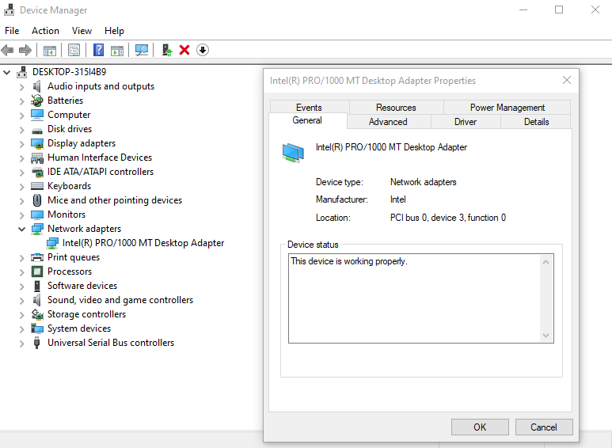
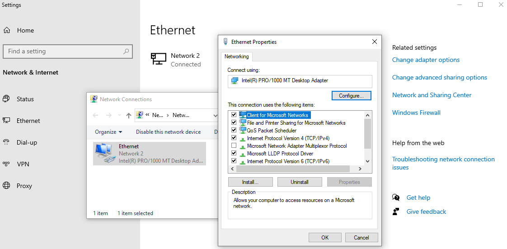
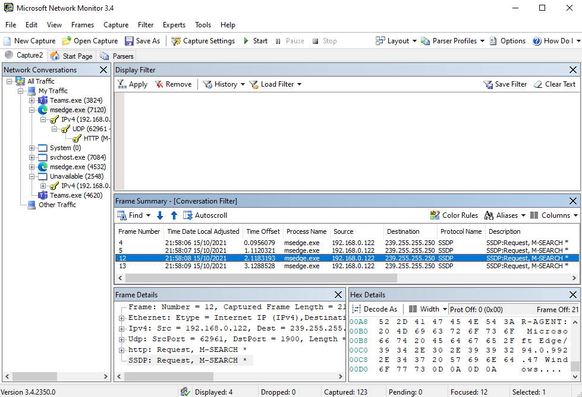
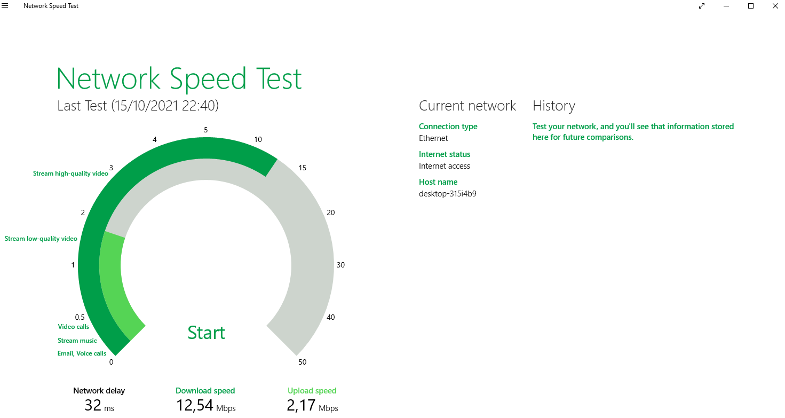

What You'll Learn
In this codelab you will learn
- how to get information about local network devices
- how to monitor networks using Windows tools
- how to check network performance
What You'll need
Guest operation system (Guest OS)
This is the OS of the virtual machine. This will be Microsoft Windows.
Administators privileges
By default, administrator privileges are required on the Host OS to install additional software. Make sure that you have the required permissions.
For the Guest OS, you will create and manage your own users. These users will therefore be different from the Host's user administration.
What You will learn:
You can use one of the following commands to find detailed information about the physical or virtual network devices on Linux:
- Device Manager
- Windows Settings
- wmic
Description
The Device Manager (Devman) is a component of the Microsoft Windows operating system, which allows users to view and control the hardware attached to the computer. Devman is part of the Microsoft Management Console.
Sample code
To open Devmanm, simple select Device Manager in the Windows Menu.
Sample output
To see the network adapters, simply click on the corresponding icon.

You can right-click on the Network Interface Component (NIC) to see the Adapter's properties.
Description
Windows Settings is a component of Microsoft Windows, which allows users adjust their user preferences, configure their operating system, and manage their connected devices.
Sample code
To open Ethernet Properties, simple select Settings in the Windows Menu, then select Network & Internet, then the submenu Ethernet.
In Windows 11, do a search for Network Connection and confirm the result. Mark your adapter and select Properties from the context menu.
Sample output
To see the network adapters, simply click on the link Change adapter options.

You can right-click on the Ethernet component to see the its's properties.
Description
WMI (Windows Management Instrumentation) is a programming interface that can be used to capture many aspects of Windows operating systems. This ranges from hardware, operating system settings, performance data to installed applications. WMI allows to read and write (update) values. It also allows the execution of methods and functions.
WMIC stands for WMI Command.
Sample code
- Open a command prompt
- Type and execute the following command:
wmic nic get AdapterType,Name,Speed
Sample output
The command provides an overview of all available adapters:
AdapterType Name Speed
Microsoft Kernel Debug Network Adapter
Ethernet 802.3 Intel(R) PRO/1000 MT Desktop Adapter 1000000000
WAN Miniport (SSTP)
WAN Miniport (IKEv2)
WAN Miniport (L2TP)
WAN Miniport (PPTP)
WAN Miniport (PPPOE)
Ethernet 802.3 WAN Miniport (IP)
Ethernet 802.3 WAN Miniport (IPv6)
Ethernet 802.3 WAN Miniport (Network Monitor)
What You will learn:
You can use one of the following tools to find detailed information about the physical or virtual network devices on Microsoft Windows:
- Task Manager
- Network Monitor
- Netstat
Description
The Windows Task Manager (Taskmon) is a system tool found in all versions of Microsoft Windows platform's. It provides information about running applications, processes, and services, as well as computer performance, network activity, and memory information. There are two views for the Task Manager: Simplified and Advanced.
Sample code
To use Taskmon, open "Start", do a search for taskman, and confirm the result. Or do a right-click on the Windows Taskbar and select Task Manager from the menu.

Microsoft improves the Task Manager between each version of Windows. Currently, Taskmon under Windows 11 has a redesigned look and some new features.

Learn more about the Task Manager from Microsoft Learn or from LifeWire.
Sample output
To see the network activities, simply click on the tab ‘Performance' and select the corresponding icon.

Under Windows 11, select either the Ethernet ...

... or the Wi-Fi icon to see some spikes up and down depending on network activities.

Description
Microsoft Network Monitor is a tool, which allows users capturing network traffic.
Microsoft Network Monitor can be downloaded here.
Sample code
After installation, start the application and select View -> Select Network. If this doesn't work, then you have to log out and log in again. Make sure that your Network is selected (check again by run View -> Select Network again).

Next, click on New Capture -> Start to start network capturing. Traffic will show up in the left pane under Network conversation. Click on Stop whenever needed. Select one of the traffic conversations (here msedge.exe, the internet browser) and study the frames.

If you need the data for a longer period of time, you can save it to a file (select File -> Save as ...).
Description
The tool netstat displays active TCP connections, ports on which the computer is listening, Ethernet statistics, IPv4 statistics, and much more.
Sample code
To start the program, run the command with the following options:
netstat -an | more
Where,
- -a - Displays all active TCP connections and the TCP and UDP ports on which the computer is listening.
- -n - Displays active TCP connections, however, addresses and port numbers are expressed numerically and no attempt is made to determine names.
Sample output
Active Connections
Proto Local Address Foreign Address State
TCP 0.0.0.0:135 0.0.0.0:0 LISTENING
TCP 0.0.0.0:445 0.0.0.0:0 LISTENING
TCP 192.168.0.122:139 0.0.0.0:0 LISTENING
TCP 192.168.0.122:52193 52.133.149.12:443 ESTABLISHED
TCP 192.168.0.122:52202 52.134.91.30:443 ESTABLISHED
TCP 192.168.0.122:52777 52.134.91.160:443 ESTABLISHED
TCP 192.168.0.122:52778 51.134.13.153:443 CLOSE_WAIT
--More--
Where,
- The first column (proto stands for protocol) lists all TCP and UDP connections on the machine.
- The second column provides the local IP address and port number.
- The third column provides the remote IP address and port number.
- The final column provides the state of the connection.
Furthermore,
LISTENING- Listening for inbound connections.ESTABLISHED- Connection has been established.CLOSE_WAIT- Remote shutdown. Local is waiting for the socket to close.
What You will learn:
You can use the following application for Windows to check the network performance.
- Network Speed Test
Description
The Microsoft tool Network Speed Test measures the network delay, download speed and upload speed by using servers around the world. Based on the connection's speed, Network Speed Test will tell you what activities you might be able to do, such as stream music or video calls.
You can download Network Speed Test from the Microsoft Store.

Sample code
After launching it, Network Speedtest is ready to go. Simply click on Start. 
Sample output
After the Speedtest run, the tool shows you a summary of details including network delay, the download and upload speed. The gauge chart also shows you recommendations on what you can do with this network throughput.

Clean Up
You can exit the program and un-install it if desired.
This is the end of the lab.